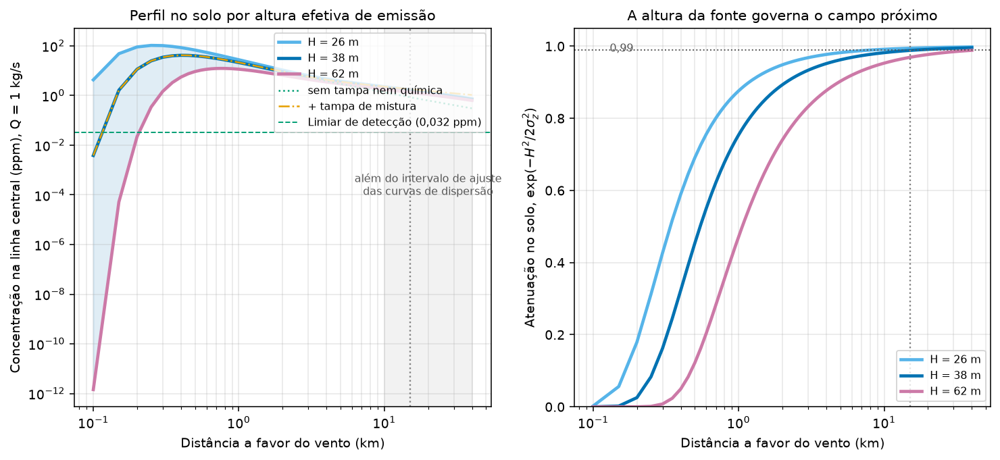

Modelando a pluma invisível
O modelo de pluma gaussiana
Adotou-se o modelo de pluma gaussiana, base dos modelos regulatórios de triagem (EPA SCREEN3/ISC). Uma fonte contínua emite a uma taxa ; o vento de velocidade transporta o poluente; a dispersão lateral e vertical é descrita por desvios e que crescem com a distância e dependem da estabilidade atmosférica.
Empregaram-se os coeficientes de Briggs em parametrização urbana, com reflexão no solo. A altura efetiva de emissão do caso base é m — o topo do tanque somado à ascensão da pluma, cuja derivação está em o destino do estireno. A taxa não foi divulgada: é a grandeza que este capítulo estima.
Termos acrescentados à formulação padrão
Três termos ausentes da equação acima foram incorporados ao modelo:
| Termo | Função | Efeito a 15 km |
|---|---|---|
| Tampa de camada de mistura | a inversão noturna interrompe o crescimento vertical da pluma; a 15 km m já excede a camada de mistura de 149 m | ×2,11 para cima |
| Decaimento químico | o estireno reage em trânsito ( noturno de 11,9 h, limitado pelo oxidante disponível) | ×0,86 para baixo |
| Razão pico/média | os coeficientes de Briggs correspondem a médias de ~10 min, enquanto a percepção olfativa integra poucos segundos | ×4,0 para cima |
Os três termos não apontam para o mesmo lado, e é disso que depende a estabilidade do resultado. A tampa de mistura faz o modelo subestimar o campo distante; o decaimento químico faz superestimar. No regime que importa para o problema inverso — madrugada de ar limpo — os dois quase se cancelam (), de modo que a estimativa de não muda de ordem de grandeza quando ambos entram na conta.
O mesmo ocorre no par formado pelo limiar observável e pela razão pico/média. O relato de “cheiro de tinta” corresponde ao limiar de reconhecimento (0,10 ppm), e não ao de detecção (0,032 ppm), o que empurra para cima; em compensação, o olfato responde ao pico instantâneo e não à média de 10 min, o que empurra para baixo. Aplicar apenas um dos dois desloca o resultado por uma ordem de grandeza. No membro central os dois entram juntos, com limiar de 0,10 ppm e razão pico/média de 4,0; a varredura de cenários leva essa razão até 5,3, valor dado pela lei de potência para um tempo de integração olfativa de 5 s. O decaimento químico e o alcance limitado da ressalva de gás denso são tratados em o destino do estireno.
A razão pico/média não tem aferição independente. Ela converte a média de 10 minutos que os coeficientes entregam num pico de 5 segundos, isto é, extrapola a lei de potência por um fator 120 em tempo — duas ordens de grandeza abaixo da menor janela para a qual o expoente é tabelado. Como escala linearmente com ela, o resultado central depende inteiramente dessa extrapolação: com razão unitária, o mesmo limiar de reconhecimento devolve 0,26 kg/s no lugar de 0,065. A escolha é declarada, e não verificada.
Perfil de concentração na linha central

A altura da fonte governa o campo próximo e é irrelevante no campo distante. Com m e sem a tampa de mistura, a atenuação geométrica vale 0,75 a 1 km e 0,99 a 15 km: a 15 km já é muito maior que , e o nível do solo não distingue de que altura o material saiu. O máximo de concentração ao nível do solo fica a 269 m da fonte no cenário de respiro contido, a 419 m no central e a 763 m no energético; além de ~5 km as três curvas colapsam sobre a mesma linha.
Problema inverso: a emissão compatível com odor a 15 km
Fixando a concentração no limiar de odor a 15 km e resolvendo a equação para , obtém-se a emissão mínima necessária para explicar a percepção relatada. No membro central — vento de 1,5 m/s a 10 m, camada de mistura de 149 m, de 11,9 h da noite de ar limpo — o resultado por classe de estabilidade é:
| Estabilidade | (kg/s) | (t/h) |
|---|---|---|
| D (neutra) | 0,094 | 0,34 |
| E | 0,065 | 0,23 |
| F (estável) | 0,065 | 0,23 |
As classes A, B e C ocorrem apenas de dia e não se combinam com a química noturna que o membro central pressupõe; por isso não figuram na tabela.
A comparação defensável não é entre classes isoladas, e sim entre regimes completos. Um cenário diurno — classe C, vento de 3,9 m/s, camada de mistura de 1000 m e diurno — exigiria 2,24 kg/s (8,1 t/h) para produzir odor a 15 km, contra 0,065 kg/s do cenário de madrugada. O contraste é de um fator , e sua origem é a combinação de vento, camada de mistura e química, não a classe de estabilidade em si. É o que explica o adensamento das queixas à noite e no início da manhã. Cada regime carrega o expoente do perfil de vento que lhe corresponde — 0,30 sob classe estável, 0,20 sob a classe C convectiva —, de modo que a comparação não transporta para o dia o cisalhamento da noite.
Por que a estabilidade deixa de dominar
Sob a tampa de mistura, a razão entre as classes D e F cai para 1,45, que é exatamente . A razão é geométrica: a 15 km vale 248 m e já supera m, com m, valor a partir do qual o termo vertical satura em nas duas classes. Saturado o termo vertical, resta apenas a razão entre os coeficientes laterais. Sem a tampa, a mesma razão entre classes valeria 5,2.
Sensibilidade à distância-alvo e à altura efetiva
Pela mesma razão geométrica, a distância adotada como alvo pesa pouco. Tomando 15 km como referência, 12 km dá ×0,85 e 18 km dá ×1,15; ampliando o intervalo para 8 e 20 km, os fatores vão de 0,64 a 1,24. A cifra de 15 km é um relato de percepção de odor, sem geolocalização nem horário associados, e a fraca sensibilidade do resultado a esse valor é o que torna a inversão utilizável apesar disso.
A altura efetiva também pesa pouco: de 26 a 62 m, varia de 0,059 a 0,073 kg/s, uma faixa de 24%. A variação vem inteiramente do perfil vertical de vento — uma fonte mais alta encontra vento mais forte. Com fixo, a variação é nula: sob mistura uniforme, a concentração ao nível do solo a 15 km não depende de .
Limitação. As curvas de dispersão de Briggs (1973) foram ajustadas para distâncias de 100 m a 10 km. A totalidade do problema inverso opera a 15 km, isto é, fora do intervalo de ajuste: os empregados ali são extrapolação, não interpolação.
Envelope de cenários
Varrendo oito eixos — ramo químico, classe de estabilidade, vento, altura efetiva, camada de mistura, par observável, distância-alvo e família de curvas de dispersão — em 2916 combinações, o resultado não é um número com barra de erro. Cada combinação passa antes por um teste de conservação de massa de oxidante, descrito adiante, que reprova 1485 delas:
| Ramo químico | Combinações admissíveis | (kg/s) | (t/h) |
|---|---|---|---|
| Noite de ar limpo ( h) | 1431 de 1458 | 0,024 a 0,82 | 0,09 a 2,94 |
| Noite sob NOx industrial ( min) | 0 de 1458 | — | — |
O conjunto é uma varredura de cenários, não uma amostra de distribuição: admite bordas, mas não mediana nem intervalo de confiança.
O decaimento de primeira ordem trata a concentração de oxidante como constante e externa à pluma. Isso vale para um traçador em diluição infinita, e deixa de valer quando a pluma contém mais estireno do que há oxidante para consumi-lo.
O reservatório correto é o oxigênio ímpar, e não o NO₃ instantâneo: o NO₃ se forma de NO₂ + O₃ e, ao somar-se à dupla ligação do estireno, não se regenera — cada molécula destruída por essa via custa um O₃, exatamente como a via direta. À noite não há fotólise de NO₂ que recicle o reservatório. Para um pacote de pluma, o oxidante cumulativamente entregue até o alvo é — o inicial mais o arrastado, já que o ar arrastado traz o mesmo fundo — e o estireno destruído é . Dividindo por , o balanço fica em razão de mistura e não depende da diluição:
Contra os 20 ppb de ozônio de superfície medidos na Amazônia central em estação seca, o membro central destrói 0,0042 ppm, ou 0,21 vez o disponível: passa com folga de fator cinco. O ramo de NO₃ industrial exige de 3,8 a 4,1×10⁵ vezes o disponível, e é reprovado nos 1458 membros. Dito ao contrário, e sem depender do valor adotado: o membro central pede 4,2 ppb de ozônio, e o ramo de NO₃ pediria 4.000 ppb. Não é um cenário improvável: é um cenário impossível. O próprio estireno titularia o NO₃ muito abaixo dos 5×10⁸ moléculas/cm³ assumidos, de modo que o tempo de vida noturno sob NOx industrial seria maior que o de ar limpo, e não vinte vezes menor.
A consequência é que o conjunto deixa de ser bimodal. Some com o ramo a indeterminação de três ordens de grandeza que atravessava o trabalho, e some também a condicionalidade — o resultado não depende mais de supor NO₃ noturno baixo, porque a química rápida é impossível qualquer que fosse o NOx local.
Trocando apenas o limiar de reconhecimento (0,10 ppm) pelo nível oficial de percepção distinta de odor da agência ambiental norte-americana (0,54 ppm), e mantendo todo o resto do membro central, a emissão inferida sobe por fator 5,4, para 0,350 kg/s — ainda dentro do envelope, mas acima do membro central. A escolha deste trabalho, portanto, subestima em relação ao valor oficial, e não o exagera.
O limiar de odor adotado é o eixo que mais move , porque a inversão é linear nele. Movendo-o sozinho, do piso de detecção da literatura ao valor oficial da agência, a emissão inferida percorre de 0,065 a 0,350 kg/s — fator 5,4 — e chega a 1,40 kg/s se o valor oficial for comparado ao campo médio, sem a razão pico/média. A dispersão dos limiares olfativos publicados é a maior incerteza isolada do problema inverso.
O segundo é a família de curvas de dispersão. Sob classe F o par urbano/rural corresponde a um fator de 3,1 com o vento de transporte fixo, e de 2,3 quando o expoente do perfil de vento acompanha a classe e o terreno (Irwin, 1979) — a leitura internamente coerente, e a que o envelope usa. A causa é a interação com a tampa noturna: a 15 km o urbano, de 248 m, já excede e satura na mistura uniforme; o rural, de 44 m, permanece muito abaixo da tampa e continua a diluir livremente. As duas famílias diferem em regime, não apenas em magnitude.
A escolha urbana é sustentada pela geografia — fonte no Distrito Industrial, trajeto de 15 km sobre área construída, que é a situação dos experimentos que originaram as curvas. Ela merece ressalva porque a base de uso do solo do campo de alta resolução classifica a célula da fonte como vegetada. O tratamento completo está em dados e métodos.
é da ordem de 0,1 kg/s, com 0,065 kg/s (0,23 t/h) no membro central. É uma taxa fisicamente modesta para um tanque industrial, compatível com respiros de válvula de alívio e não com uma ruptura: não é preciso supor emissão de grande magnitude para explicar a percepção de odor em escala urbana. A formulação defensável não é “ t/h”, com três algarismos, e sim: é da ordem de 0,1 kg/s, com o envelope inteiro entre 0,025 e 0,82 kg/s sob as curvas urbanas. O que sustenta a estreiteza dessa faixa, comparada à das versões anteriores deste trabalho, não é confiança acrescida: é a eliminação de um ramo que o balanço de oxidante mostrou impossível (o destino do estireno).
Integrada ao longo das ~60 h de emissão, a taxa central corresponde a uma massa da ordem de 10 t, e o ramo de ar limpo inteiro cobre de poucas a algumas centenas de toneladas. O número só tem valor como ordem de grandeza: supõe emissão constante durante todo o período e regime noturno de ar limpo o tempo inteiro, enquanto cerca de metade das horas foi diurna, com química mais rápida e camada de mistura mais profunda.
Alcance dos níveis de referência
Distâncias na linha central, classe F, membro central. Nenhum dos limiares abaixo recebe a razão pico/média: todos são médias na duração que os define — 8 h para o TLV-TWA, 15 min para o STEL, 10 min para os AEGL —, ao passo que a correção se aplica apenas ao odor, grandeza percebida no pico instantâneo.
Os tempos de média não coincidem, e a diferença tem sinal. O campo do modelo é uma média de aproximadamente 10 minutos, que é o que os coeficientes de Briggs entregam. Só os AEGL de 10 minutos são diretamente comparáveis a ele. O STEL é definido em 15 minutos, o TLV-TWA em 8 horas e o nível de risco mínimo agudo tem base de horas: comparar a média de 10 minutos do modelo a limites de janela mais longa superestima o alcance de cada um deles, porque a média longa de uma pluma que meandreia é menor que a de 10 minutos. Convertida a 8 h pela lei de potência, a isopleta de TLV-TWA do cenário médio, hoje em 0,5 km, deixaria de se formar. As distâncias de STEL, TLV e MRL são, portanto, cotas superiores — o que é a direção conservadora para a afirmação de risco, e é assim que devem ser lidas.
| Cenário | MRL agudo 5 ppm | TLV-TWA 10 ppm | STEL / AEGL-1 20 ppm | AEGL-2 230 ppm | |
|---|---|---|---|---|---|
| S1 conservador | 0,1 kg/s | não atingido | não atingido | não atingido | não atingido |
| S2 médio | 1 kg/s | 1,0 km | 0,5 km | não atingido | não atingido |
| S3 severo | 10 kg/s | 10,2 km | 4,2 km | 2,1 km | não atingido |
O AEGL-2 não é atingido a nenhuma distância no membro central nem no de menor alcance, em nenhum dos três cenários. Há uma exceção, e ela precisa ser dita: na borda de maior alcance do envelope — vento de 1,0 m/s, altura efetiva de 26 m e camada de mistura de 100 m —, o cenário severo de 10 kg/s ultrapassa os 230 ppm do AEGL-2 até cerca de 0,5 km da fonte. É a única combinação, entre as 63 varridas, em que uma diretriz de efeito grave é cruzada, e ela reúne o cenário de emissão mais alto com o membro de dispersão mais desfavorável — sendo que o próprio cenário de 10 kg/s é cota superior instantânea, não taxa sustentada. O AEGL-3, de 1900 ppm, não é atingido em combinação alguma.
“Não atingido” significa que a concentração ao nível do solo não alcança o limite em nenhuma distância: com a pluma saindo a 38 m, o máximo no solo permanece abaixo do valor de referência. O efeito da fonte elevada é qualitativo, e não apenas quantitativo — no cenário médio a isopleta de STEL deixa de existir, e as isopletas não são discos colados ao muro da fábrica, e sim anéis, com o solo abaixo do limite nas primeiras centenas de metros.
As distâncias do cenário S3 são limites de pico, não alcances sustentados: manter 10 kg/s ao longo das 60 horas do episódio exigiria emitir cerca de 2160 t de estireno e dissipar 3,9 MW em calor de vaporização, o que a aferição externa mostra ser incompatível com a escala do evento.
O contraste central se apoia num argumento independente das isopletas, e a base de comparação precisa ser declarada porque a folga depende dela. Na média de 10 minutos em que os limiares de saúde são definidos, a concentração a 15 km no membro central vale 0,025 ppm: 200 vezes abaixo do nível de risco mínimo agudo (5 ppm) e 800 vezes abaixo da diretriz de exposição aguda (20 ppm). O pico instantâneo a que o olfato responde, de 0,10 ppm, fica 50 e 200 vezes abaixo dos mesmos valores. A comparação legítima é a primeira — grandezas médias contra limites médios —, e é ela que sustenta a folga de mais de duas ordens de grandeza.
O maior dos termos discutidos aqui vale um fator ~5, e mesmo o eixo de maior alavancagem do envelope inteiro não fecha uma distância de duas ordens de grandeza. Os níveis de referência ficam confinados a poucos quilômetros no cenário central; o odor varre dezenas.
A distância da fonte (Unidade IV da Videolar-Innova) ao Teatro Amazonas é de 7,6 km (planar UTM). Os relatos de até 15 km são consistentes com esse alcance, desde que “15 km” seja tratado como o raio máximo de percepção, e não como a distância a um ponto único.
Mapas interativos
Contexto e anéis de distância
Fonte, referências urbanas e anéis de 5, 10, 15 e 20 km.
Rumo do transporte
Setores coloridos por dia e dimensionados pela frequência do vento, indicando o rumo para onde a pluma foi levada — com predominância para oeste, na direção da cidade.
Isopletas de concentração
O mapa abre no cenário defendido neste capítulo ( kg/s), com a faixa de incerteza do odor e o rumo alternativo do WRF. A legenda declara as hipóteses adotadas — altura efetiva, vento, camada de mistura, , limiar e razão pico/média. Os contornos tracejados correspondem a regiões abertas, em que o corte é da grade e não da pluma; o anel pontilhado de 10 km marca a distância a partir da qual as curvas de Briggs passam a ser extrapoladas.
Limitações do campo de concentração
O rumo é a maior incerteza, e é maior que a incerteza da física. As isopletas são desenhadas no rumo de 80°, mediana do METAR, que projeta a pluma sobre o Centro. O WRF de 1 km deste mesmo projeto dá 134° na madrugada, na célula da fonte, o que projeta a pluma sobre a zona norte: 54° de diferença. Como a 15 km vale apenas 624 m, e os dois rumos separam os eixos por 13,6 km naquela distância, a separação equivale a cerca de 22 larguras de pluma. A terceira camada do mapa apresenta o rumo alternativo; a região efetivamente afetada está em algum ponto entre os dois, e os dados disponíveis não permitem decidir qual.
As curvas de dispersão extrapolam. O ajuste de Briggs cobre de 100 m a 10 km, enquanto o problema inverso opera a 15 km e o mapa se estende a 40 km. A longa distância e crescem aproximadamente como , de modo que e a curva pode simplesmente nunca cruzar o limiar. É a razão pela qual algumas linhas registram “não fecha no domínio” em vez de um número: um alcance de dezenas de quilômetros ali seria propriedade da cauda algébrica do ajuste, não física do evento.
O campo próximo não está resolvido — e não estar resolvido não equivale a estar superestimado. Três efeitos de magnitude comparável agem em sentidos opostos nos primeiros 2 km: a altura efetiva, que reduz a concentração ao nível do solo; o downwash do tanque de 18 m e dos prédios do polo, que a aumenta; e a resolução da grade. Resolver o campo próximo exigiria um modelo de obstáculos, não uma pluma gaussiana.